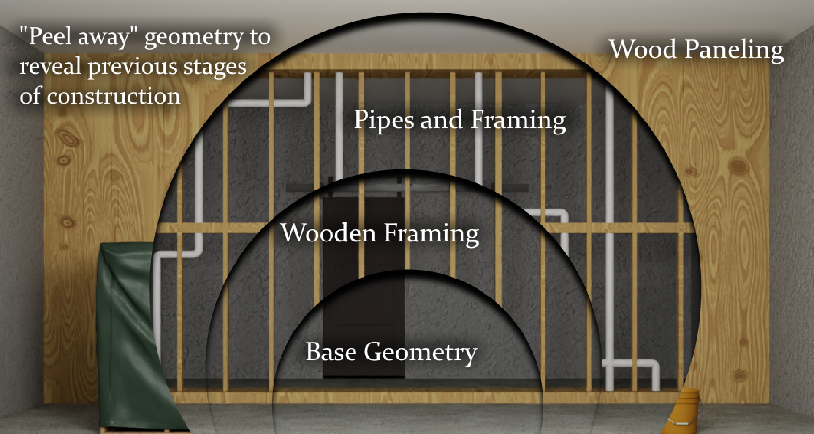
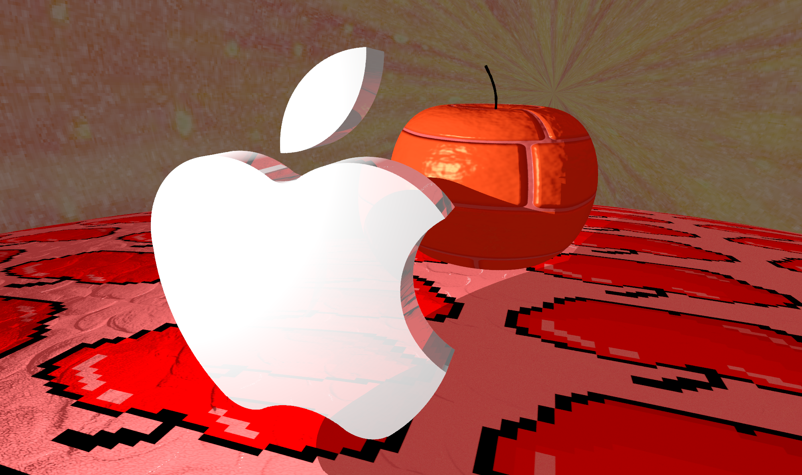

Yiwen (Evan) Zhang
World Models & 3D Reconstruction
I'm an incoming CS PhD at Cornell University, Cornell Tech, NYC, advised by Professor Hadar Averbuch-Elor. My interests are in world models and 3D reconstruction. Previously, I received my B.A. in Computer Science at Cornell University.
Publications
§ 01-

Emergent Extreme-View Geometry in 3D Foundation Models
We develop a lightweight adaptation scheme for 3D foundation models that enables robust geometric reasoning under extreme-view scenarios by updating only a small subset of bias parameters, achieving state-of-the-art performance on relative rotation estimation.
Projects
§ 02-

ARSplat: Mobile AR for Time-Lapse Tour
Leveraging iPhone's LiDAR camera, this project builds an App that captures and aligns multiple scenes of a changing environment, then visualizes the time-lapse.
-

Auto-Riggable Gaussian Characters
Leveraging dynamic gaussian splats with local rigidity constraints, this project decomposes moving subjects into animation-ready rigs.
-

MLS-MPM and CPIC
This project implements the Moving Least Squared Material Point Method, CPIC, various materials, and mesh extraction in 2D and 3D.
-

Compositional Splatting for Construction Sites
Leveraging gaussian splats for digital twin capture on construction sites, this project aims to simulate realistic construction environments and record the construction processes.
-
Zelda: Catch the Koroks
This project uses rasterization to render a mini game that is inspired by Zelda. Customized shaders are created to simulate grass, trees, terrain, etc.
-

Apple Is All You Need
This project implements a raytracer that renders a scene exclusively composed of apples. Various graphics techniques are used including constructive solid geometry, Fresnel refraction, defocus blur, etc.
Teaching
§ 03- 2025 Fall Teaching Assistant — CS 4787: Principles of Large-Scale Machine Learning Systems
- 2025 Spring Teaching Assistant — CS 4670: Introduction to Computer Vision
- 2024 Fall Teaching Assistant — CS 4820: Introduction to Analysis of Algorithms
- 2024 Spring Consultant — CS 1112: Introduction to Computing: An Engineering and Science Perspective
- 2023 Fall Consultant — CS 1112: Introduction to Computing: An Engineering and Science Perspective